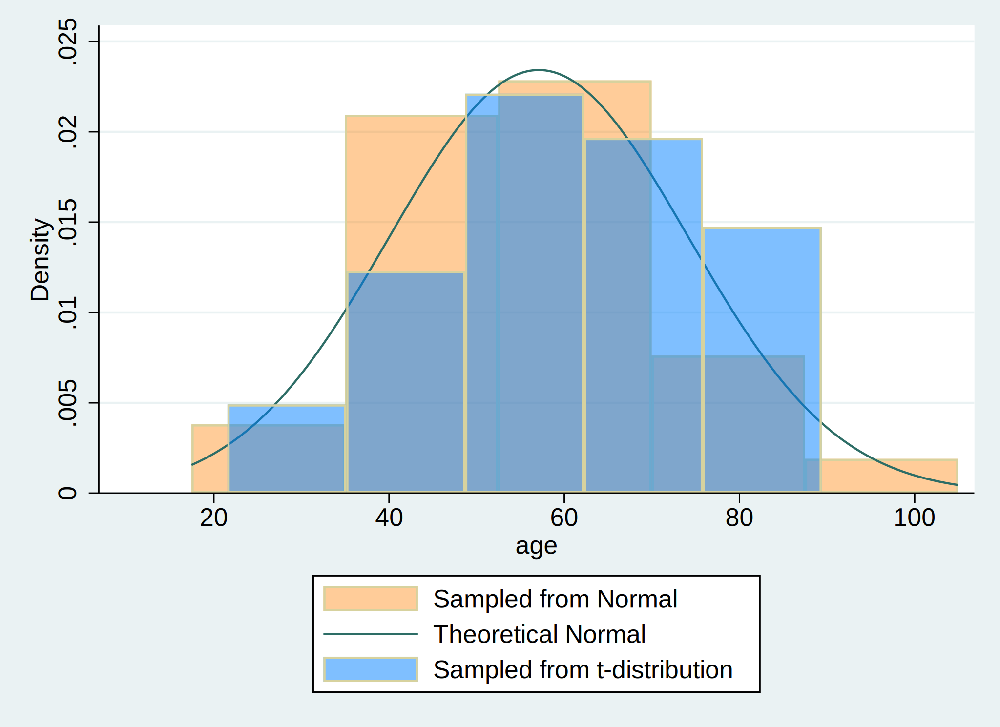

Graph:
. cls
. clear
. set obs 30
. gen age = (rnormal() * 15) + 57
. gen age_t=(rt(_N)*15)+57
.
. hist age, ///
> fcolor(orange%40) /// simulated normal
> addplot(hist age_t, fcolor(midblue%50)) /// simulated t-distribution
> normal /// theoretical normal
> legend(on ///
> lab(1 "Sampled from Normal") ///
> lab(2 "Theoretical Normal") ///
> lab(3 "Sampled from t-distribution") ///
> )
.
. graph export hist_age.png, replace

The results are based on simulated data
Distribution of $${ Age, years} \sim \mathcal{N}(\mu=57,\sigma^2=225)$$
. . .